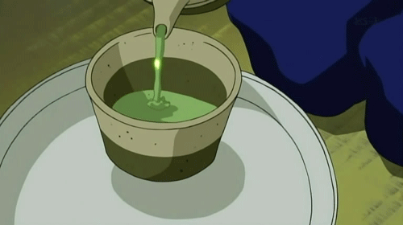

Matcha Green Tea Recipe 🍵

Description
Matcha Green Tea: A traditional Japanese tea made from finely ground green tea leaves, known for its vibrant green color, unique flavor, and numerous health benefits.
Ingredients
- Matcha green tea powder 🍵
- Hot water ☕
- Sweetener (optional) 🍬
Steps
- Boil water until it reaches the desired temperature (around 175°F or 80°C). 🔥
- In a matcha bowl or cup, add 1 to 2 teaspoons of matcha green tea powder. 🍯
- Slowly pour a small amount of hot water into the bowl. 🌎
- Using a bamboo whisk or a spoon, vigorously whisk the matcha powder and water together until it forms a smooth, frothy mixture. 🥤
- Add the remaining hot water and continue whisking until well combined. 🥤
- Taste the matcha tea and adjust sweetness by adding a sweetener if desired. 🎂
- Serve the matcha green tea in a cup or bowl and enjoy! 🍵
The Matcha Green Tea is now ready to be enjoyed